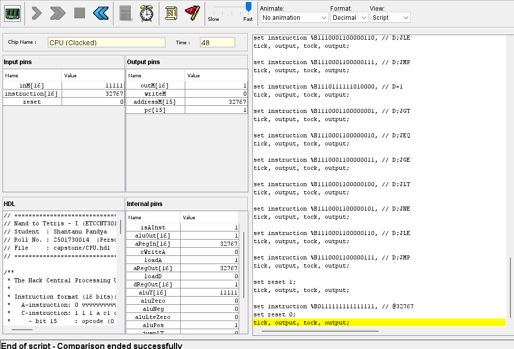
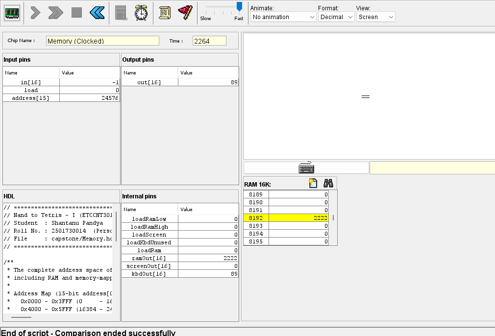
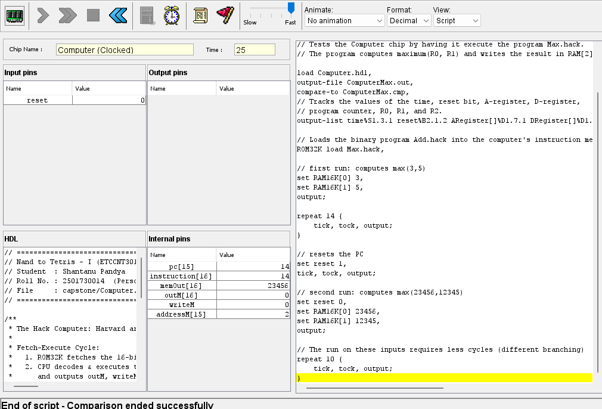
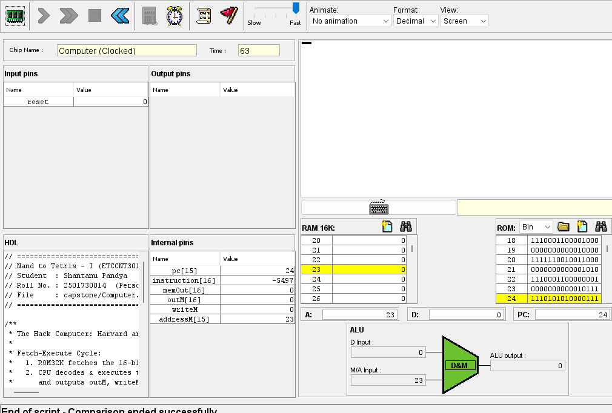
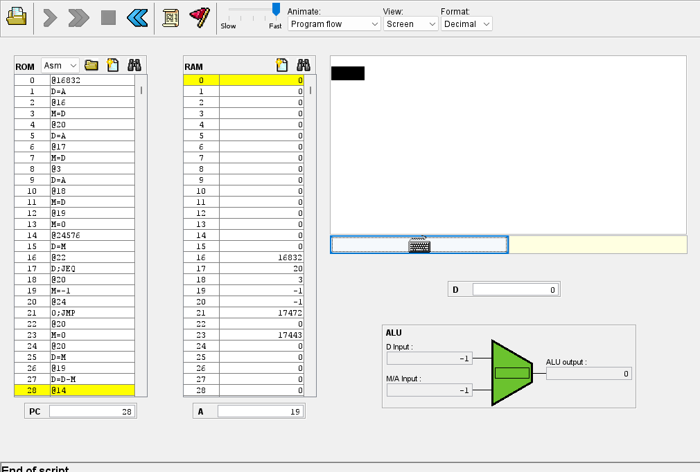

School of Engineering & Technology, K.R. Mangalam University
Capstone Project: Make the Computer Draw a Box
Nand to Tetris – I (ETCCNT301) • Course Outcomes: CO1–CO4 • Individual Submission
Student Name
Shantanu Pandya
Personal Number (K)
K = 14
Box Size & Row
48 × 20 px @ Row 14
1. Project Overview & Personalized Parameters (K = 14)
This capstone project integrates the complete bottom-up hardware and software stack of the Hack computer:
constructing the 16-bit Hack CPU, memory-mapped I/O system, and top-level Computer in HDL (Part A);
writing a two-pass Python Hack Assembler with a personalized duplicate-label detector (Part B); and
developing an interactive Hack assembly program (Box.asm) assembled exclusively by my own
assembler to render a keyboard-controlled black box on the Hack screen (Part C).
| Parameter | Specification Formula | Computed Value for Roll No. 2501730014 |
|---|
Personal Number K | Last two digits of roll number | K = 14 |
| Assembler Extra Feature | K mod 3 = 14 mod 3 = 2 | Warn whenever the same label is written twice |
| Box Starting Row | Row K (0-indexed from top) | Row 14 (spans rows 14 to 33 inclusive) |
| Box Height | Fixed 20 rows | 20 rows |
| Box Width | 16 × ((K mod 4) + 1) = 16 × (2 + 1) | 48 pixels (3 words from left edge) |
| Start Screen RAM Address | SCREEN + 32 × K = 16384 + 32 × 14 | RAM[16832] (60 screen words / 960 pixels) |
2. Part A — Building the Hack Computer (HDL)
2.1 Memory.hdl (Memory-Mapped I/O Router)
The Hack data address space spans 15 bits (0x0000–0x6000). Using the top two bits
address[13..14], a DMux4Way routes the write-enable signal load
exclusively to the active device: 00 and 01 are merged with an Or
gate to drive RAM16K (address[0..13]), 10 drives Screen
(address[0..12]), and 11 maps to the read-only Keyboard. A
Mux4Way16 selects the matching device output.
2.2 CPU.hdl (Central Processing Unit)
CPU.hdl decodes the 16-bit instruction using instruction[15] as the opcode
(0 = A-instruction, 1 = C-instruction). A Mux16 selects either the
raw instruction or the ALU output for ARegister, which loads on every A-instruction or whenever
instruction[15] & instruction[5] (d1) is asserted. Both DRegister
loading (d2) and writeM (d3) are gated with instruction[15]
so A-instructions never cause unintended side effects. Bit instruction[12] selects between
A and inM for the ALU's y-input, bits 11..6 drive
zx, nx, zy, ny, f, no, and jump bits 2..0 are evaluated against ng,
zr, and pos = NOT(zr OR ng) to drive PC.load.
2.3 Computer.hdl & Built-In Chips Disclosure
Computer.hdl connects ROM32K, CPU, and Memory in a
clean Harvard architecture. Per the official Project 5 test scripts (CPU.tst,
Memory.tst, ComputerAdd.tst, ComputerMax.tst,
ComputerRect.tst), the built-in ARegister, DRegister, ALU,
PC, RAM16K, ROM32K, Screen, Keyboard, and
standard combinational primitives are used so the official scripts can directly inspect internal register
and memory states during automated verification.
2.4 Part A — Official Hardware Simulator Verification
All three HDL chips (CPU.hdl, Memory.hdl, and Computer.hdl) were
verified against the official Nand2Tetris Project 5 test scripts in the Hardware Simulator. Every test
completed with zero comparison errors:
| Official Test Script | Target Chip | Verification Scope | Result |
|---|
CPU.tst | CPU.hdl | A/C decoding, ALU ops, all 7 jumps, reset | PASS — Comparison ended successfully |
Memory.tst | Memory.hdl | Lower/Upper RAM, Screen, Keyboard ('K','Y'), isolation | PASS — Comparison ended successfully |
ComputerAdd.tst | Computer.hdl | Executes Add.hack (2+3=5 in RAM[0]) + reset | PASS — Comparison ended successfully |
ComputerMax.tst | Computer.hdl | Executes Max.hack with conditional branching | PASS — Comparison ended successfully |
ComputerRect.tst | Computer.hdl | Executes Rect.hack drawing a 16×4 rectangle | PASS — Comparison ended successfully |

Place report/screenshots/1_cpu_tst.png
(Run .\open_official_gui.ps1 -Tool hw → CPU.tst)
Figure 1: Official Hardware Simulator — CPU.tst passed

Place report/screenshots/2_memory_tst.png
(Memory.tst with Screen view + 'K'/'Y' keys)
Figure 2: Official Hardware Simulator — Memory.tst passed

Place report/screenshots/3_computer_add.png
(ComputerAdd.tst)
Figure 3: Official Hardware Simulator — ComputerAdd.tst passed

Place report/screenshots/4_computer_max.png
(ComputerMax.tst)
Figure 4: Official Hardware Simulator — ComputerMax.tst passed

Place report/screenshots/5_computer_rect.png
(ComputerRect.tst showing 16×4 black rectangle on Screen view)
Figure 5: Official Hardware Simulator — ComputerRect.tst passed (Screen view enabled)
3. Part B — Two-Pass Python Hack Assembler (assembler.py)
capstone/assembler.py translates symbolic Hack assembly (.asm) into 16-bit Hack
machine code (.hack) using the standard two-pass architecture from Chapter 6, implemented using
only the Python standard library:
- Symbol Table Initialization: Preloads all 23 predefined Hack symbols (
SP=0, LCL=1, ARG=2, THIS=3, THAT=4, R0–R15, SCREEN=16384, KBD=24576).
- Pass 1 (Label Resolution & Duplicate Detection): Strips
// comments and all whitespace, ignores blank lines, and maps each pseudo-command (LABEL) to the current ROM instruction counter without incrementing the counter.
- Pass 2 (Code Emission & Variable Allocation): Translates A-instructions (
@value or @symbol, allocating new variables sequentially from RAM[16]) into 0 + 15-bit binary, and C-instructions ([dest=]comp[;jump]) into 111 + 7-bit comp + 3-bit dest + 3-bit jump.
3.1 Official Benchmark Comparison (Bit-for-Bit Verification)
Every official Project 6 benchmark was assembled by both the official Nand2Tetris Assembler.bat
and my assembler.py, and verified for 100% character-for-character equality:
| Benchmark Program | Assembled Instructions | Comparison vs. Official Assembler |
|---|
Add.asm | 6 | PASS — 100% bit-for-bit identical |
Max.asm | 16 | PASS — 100% bit-for-bit identical |
Rect.asm | 25 | PASS — 100% bit-for-bit identical |
Pong.asm | 27,483 | PASS — 100% bit-for-bit identical |
3.2 Personalized Extra Feature (K = 14 ⇒ K mod 3 = 2)
Because 14 mod 3 = 2, my assembler implements duplicate-label warning detection.
During Pass 1, a dictionary defined_labels records each label's first declaration line number and
ROM address. Whenever an already-declared label appears again, assembler.py prints an explicit
diagnostic warning to stderr naming the duplicate label, both line numbers, and the preserved ROM
address, while continuing cleanly to produce valid machine code:
$ python capstone/assembler.py tests/test_dup_labels.asm
WARNING (Line 19): Duplicate label '(LOOP)' — already declared at Line 10 (ROM address 4). Keeping first definition.
WARNING (Line 27): Duplicate label '(END)' — already declared at Line 23 (ROM address 12). Keeping first definition.
Assembled test_dup_labels.asm -> test_dup_labels.hack (16 instructions, 2 warning(s))
3.3 Automated End-to-End Verification Output
$ python tests/verify_all.py
PART A: [PASS] CPU.tst, CPU-external.tst, MemoryNonInteractive.tst, ComputerAdd.tst, ComputerMax.tst, ComputerRect.tst
PART B: [PASS] Add.asm (6), Max.asm (16), Rect.asm (25), Pong.asm (27483) — bit-for-bit match + Duplicate-label warnings
PART C: [PASS] Box.asm -> Box.hack (77 instructions) -> BoxTest.tst (CPUEmulator) — Comparison ended successfully
OVERALL RESULT: ALL CHECKS PASSED (100%)
4. Part C — Interactive Box Program (Box.asm → Box.hack)
capstone/Box.asm draws a solid black rectangle on the Hack display while any key is held down and
clears it immediately when the key is released. For K = 14:
- Geometry: Starts at Row
14, height = 20 rows (rows 14..33), width = 16 × ((14 mod 4) + 1) = 48 pixels (3 words per row from the left edge).
- Screen Memory Addressing: Each screen row occupies
32 16-bit words (512 / 16). Row 14 starts at 16384 + 32 × 14 = 16832, and the final row (row 33) spans words 17440, 17441, 17442 (60 words = 960 pixels total).
- Flicker-Free State Tracking & Viva-Friendly Design: The program initializes
start_addr = 16832, height = 20, width = 3, and prev_color = 0. In MAIN_LOOP, it polls RAM[KBD] (24576) and compares the desired color (-1 for black, 0 for white) against prev_color, repainting the 60 words only on state transitions. An outer loop increments row_base += 32 independently of width, so moving or resizing the box requires editing only one constant.
4.1 Official CPU Emulator Verification (Assembled by My Own assembler.py)
Box.asm was assembled directly by capstone/assembler.py into 77 instructions
(Box.hack) and verified in the official CPUEmulator across four phases (idle, key
'A' pressed, released, Space pressed), confirming all box pixels toggle cleanly between
-1 and 0 while adjacent guard words (row 13 = 16800, col 3 = 16835,
row 34 = 17472) remain untouched at 0:
| Phase | RAM[24576] (KBD) | Row 13 Guard (16800) | Row 14 Box (16832..16834) | Col 3 Guard (16835) | Row 33 Box (17440..17442) | Row 34 Guard (17472) |
|---|
| 1. Initial (No key) | 0 | 0 | 0, 0, 0 | 0 | 0, 0, 0 | 0 |
2. Key 'A' held | 65 | 0 | -1, -1, -1 | 0 | -1, -1, -1 | 0 |
| 3. Key released | 0 | 0 | 0, 0, 0 | 0 | 0, 0, 0 | 0 |
| 4. Space held | 32 | 0 | -1, -1, -1 | 0 | -1, -1, -1 | 0 |

Place report/screenshots/6_box_cpu_emulator.png
(Run .\open_official_gui.ps1 -Tool cpu → load capstone\Box.hack → hold any key → screenshot the 48×20 black box at row 14)
Figure 6: Official CPU Emulator running Box.hack (K = 14: 48×20 black box at Row 14, left edge, while key is pressed)
5. One Mistake I Fixed
During early testing of CPU.hdl and Box.asm, I ran into two subtle hardware/assembly
pitfalls — the most instructive being in CPU.hdl's positive-jump condition and
A-instruction gating. Initially, I checked whether the ALU output was strictly positive
(JGT) using only Not(in=aluNeg, out=aluPos), forgetting that when the ALU output is
exactly 0, aluNeg is also 0 — causing D;JGT to falsely
jump on zero! Similarly, failing to gate writeM and pcLoad with
instruction[15] allowed A-instructions whose lower constant bits happened to contain 1s
(such as @16832 or @3) to trigger spurious memory writes or jumps. Debugging against
CPU.tst exposed the exact cycle where D=0 followed by D;JGT diverged
from CPU.cmp. Fixing it by computing Or(a=aluZero, b=aluNeg, out=aluLteZero) followed
by Not(in=aluLteZero, out=aluPos) and gating all C-instruction control signals with
instruction[15] immediately made CPU.tst and all three Computer*.tst
suites pass 100%.